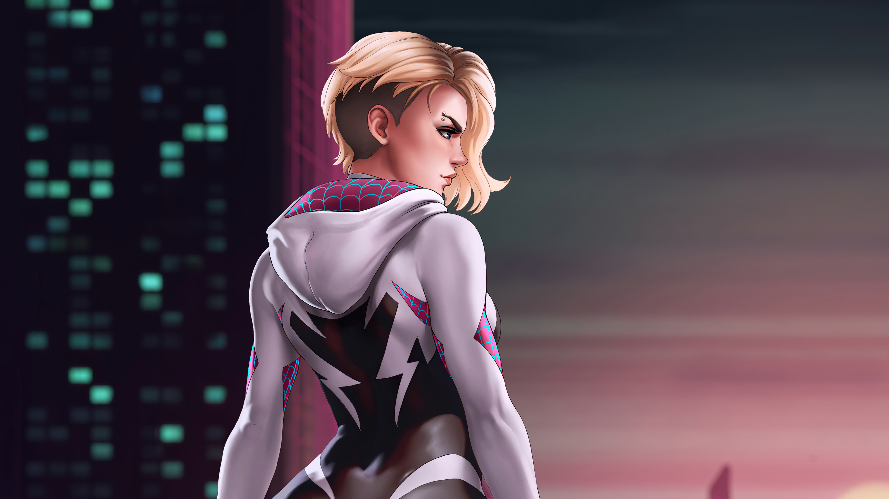

Una versión alternativa de Gwen Stacy, de las historias de Spider-Man, vive en la Tierra-65, donde fue mordida por una araña radiactiva en su adolescencia y se convierte en Spider-Woman a los veinte años, desarrollando parte de la personalidad, conflictos, tribulaciones, poderes y habilidades clásicas de Spider-Man. Entre sus enemigos se encuentran las versiones de la Tierra-65 de Matt Murdock, Frank Castle, Cindy Moon y Susan Storm; sus aliados incluyen a su banda, las Mary Janes, liderada por Carnage (Mary Jane Watson), quien está enamorada de Gwen.